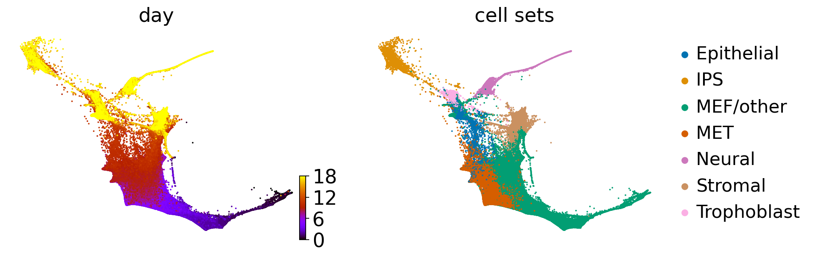

WOT-based analysis of mouse embryonic fibroblasts#
Library imports#
import os
import sys
import numpy as np
import pandas as pd
import matplotlib.pyplot as plt
import seaborn as sns
from mpl_toolkits.axisartist.axislines import AxesZero
import cellrank as cr
import scanpy as sc
import scvelo as scv
import wot
sys.path.extend(["../../../", "."])
from paths import DATA_DIR, FIG_DIR # isort: skip # noqa: E402
Global seed set to 0
General settings#
# set verbosity levels
cr.settings.verbosity = 4
sc.settings.verbosity = 2
scv.settings.verbosity = 3
scv.settings.set_figure_params("scvelo", dpi_save=400, dpi=80, transparent=True, fontsize=20, color_map="viridis")
scv.settings.plot_prefix = ""
SAVE_FIGURES = False
if SAVE_FIGURES:
os.makedirs(FIG_DIR / "realtime_kernel" / "mef", exist_ok=True)
TERMINAL_STATES = ["IPS", "Neural", "Stromal", "Trophoblast"]
Function definitions#
Data loading#
adata = cr.datasets.reprogramming_schiebinger(DATA_DIR / "mef" / "reprogramming_schiebinger.h5ad")
adata = adata[adata.obs["serum"] == "True"].copy()
adata.obs["day"] = adata.obs["day"].astype(float)
adata.uns["cell_sets_colors"] = sns.color_palette("colorblind").as_hex()[: len(adata.obs["cell_sets"].cat.categories)]
adata
DEBUG: Loading dataset from `'/vol/storage/philipp/code/cellrank2_reproducibility/data/mef/reprogramming_schiebinger.h5ad'`
AnnData object with n_obs × n_vars = 165892 × 19089
obs: 'day', 'MEF.identity', 'Pluripotency', 'Cell.cycle', 'ER.stress', 'Epithelial.identity', 'ECM.rearrangement', 'Apoptosis', 'SASP', 'Neural.identity', 'Placental.identity', 'X.reactivation', 'XEN', 'Trophoblast', 'Trophoblast progenitors', 'Spiral Artery Trophpblast Giant Cells', 'Spongiotrophoblasts', 'Oligodendrocyte precursor cells (OPC)', 'Astrocytes', 'Cortical Neurons', 'RadialGlia-Id3', 'RadialGlia-Gdf10', 'RadialGlia-Neurog2', 'Long-term MEFs', 'Embryonic mesenchyme', 'Cxcl12 co-expressed', 'Ifitm1 co-expressed', 'Matn4 co-expressed', '2-cell', '4-cell', '8-cell', '16-cell', '32-cell', 'cell_growth_rate', 'serum', '2i', 'major_cell_sets', 'cell_sets', 'batch'
var: 'highly_variable', 'TF'
uns: 'batch_colors', 'cell_sets_colors', 'day_colors', 'major_cell_sets_colors'
obsm: 'X_force_directed'
scv.pl.scatter(adata, basis="force_directed", c=["day", "cell_sets"], legend_loc="right", cmap="gnuplot")

Data pre-processing#
sc.pp.pca(adata)
computing PCA
on highly variable genes
with n_comps=50
finished (0:00:19)
sc.pp.neighbors(adata, random_state=0)
computing neighbors
using 'X_pca' with n_pcs = 50
finished (0:02:55)
WOT#
if not (DATA_DIR / "mef" / "wot_tmaps").exists():
ot_model = wot.ot.OTModel(adata, day_field="day")
ot_model.compute_all_transport_maps(tmap_out=DATA_DIR / "mef" / "wot_tmaps" / "tmaps")
cell_sets = {
terminal_state: adata.obs_names[adata.obs["cell_sets"].isin([terminal_state])].tolist()
for terminal_state in TERMINAL_STATES
}
tmap_model = wot.tmap.TransportMapModel.from_directory(DATA_DIR / "mef" / "wot_tmaps" / "tmaps")
target_destinations = tmap_model.population_from_cell_sets(cell_sets, at_time=18)
fate_ds = tmap_model.fates(target_destinations)
for terminal_state in TERMINAL_STATES:
adata.obs[f"{terminal_state}_fate"] = fate_ds[:, terminal_state].X.squeeze()
Fate vs. experimental time#
palette = dict(zip(adata.obs["cell_sets"].cat.categories, adata.uns["cell_sets_colors"]))
for terminal_state in TERMINAL_STATES:
fate_prob = fate_ds[:, terminal_state].X.squeeze()
ref_fate_prob = 1 - fate_prob
log_odds = np.log(np.divide(fate_prob, 1 - fate_prob, where=fate_prob != 1, out=np.zeros_like(fate_prob)) + 1e-12)
df = pd.DataFrame(
{
"Log odds": log_odds,
"Day": adata.obs["day"].values,
"Cell set": adata.obs["cell_sets"],
}
)
fig, ax = plt.subplots(figsize=(20, 4))
sns.scatterplot(data=df, x="Day", y="Log odds", hue="Cell set", alpha=0.5, palette=palette, ax=ax)
ax.set_title(terminal_state)
ax.xaxis.grid(True)
ax.set_xticks(adata.obs["day"].unique())
ax.set_xticklabels(ax.get_xticks(), rotation=45)
if SAVE_FIGURES:
fig = plt.figure(figsize=(10, 4))
ax = fig.add_subplot(axes_class=AxesZero)
for direction in ["xzero", "yzero"]:
ax.axis[direction].set_axisline_style("-|>")
ax.axis[direction].set_visible(True)
ax.axis[direction].set_zorder(0)
ax.axis["xzero"].set_ticklabel_direction("-")
ax.axis["yzero"].set_ticklabel_direction("+")
for direction in ["left", "right", "bottom", "top"]:
ax.axis[direction].set_visible(False)
sns.scatterplot(data=df, x="Day", y="Log odds", hue="Cell set", alpha=0.5, palette=palette, ax=ax)
ax.xaxis.grid(True)
ax.get_legend().remove()
ax.set_xticks(ticks=adata.obs["day"].unique(), labels=[])
ax.set_yticks(ticks=[-20, -10, 0, 10], labels=[])
ax.set(xlabel=None, ylabel=None)
fig.savefig(
FIG_DIR / "realtime_kernel" / "mef" / f"wot_log_odds_vs_day-{terminal_state.lower()}_lineage.pdf",
format="pdf",
transparent=True,
bbox_inches="tight",
pad_inches=0.3,
)
plt.show()